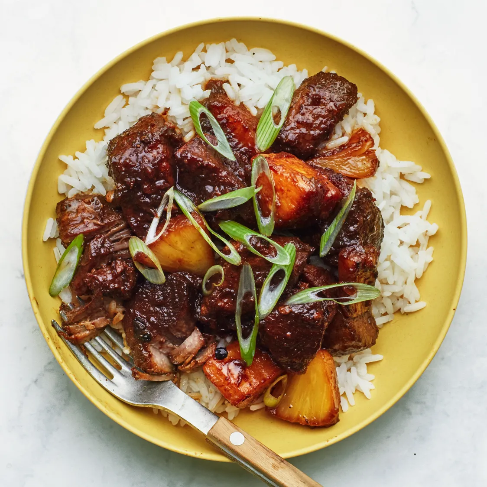

Adobo Recipe

What is Adobo?
Philippine adobo is a popular Filipino dish and cooking process in Philippine cuisine. In its base form, meat, seafood, or vegetables are first browned in oil, and then marinated and simmered in vinegar, salt and/or soy sauce, and garlic.
Ingredients
- Pork Belly
- Garlic
- Dried Bay leaves
- Soy sauce
- Peppercorn
- Salt
- Water
How to Cook Pork Adobo
- Combine the pork belly, soy sauce, and garlic then marinade for at least 1 hour
- Heat the pot and put-in the marinated pork belly. Cook this all up for a few minutes
- Pour the remaining marinade including the garlic.
- Add water, whole peppercorn, and dried bay leaves. Then bring your mixture to a boil. Simmer for 40 minutes to 1 hour
- Put the vinegar inside and simmer for 12 to 15 minutes
- Add salt to taste
- Serve hot. Share and enjoy!